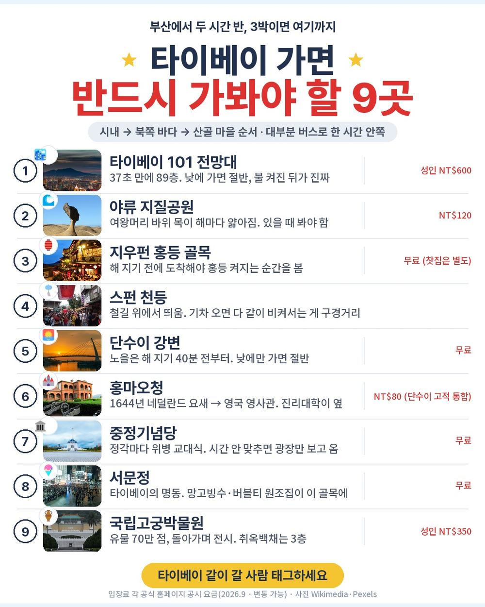
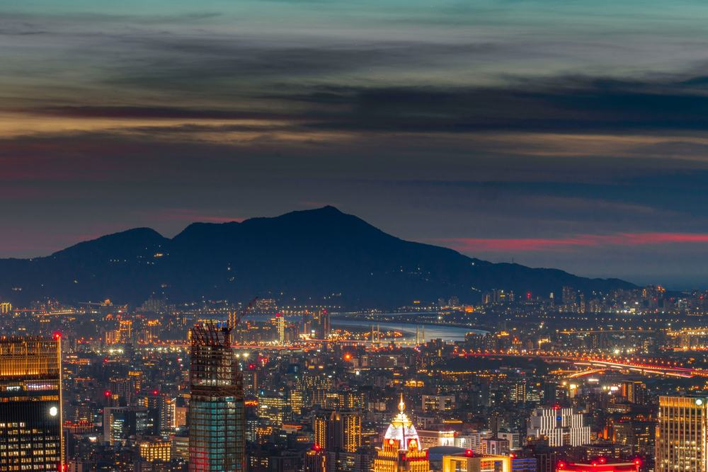
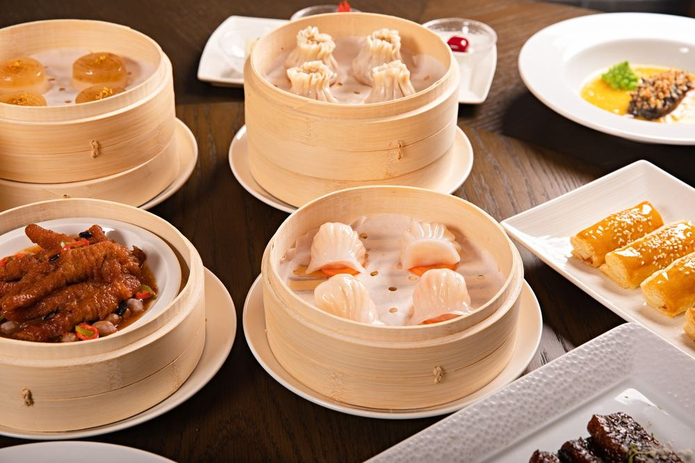
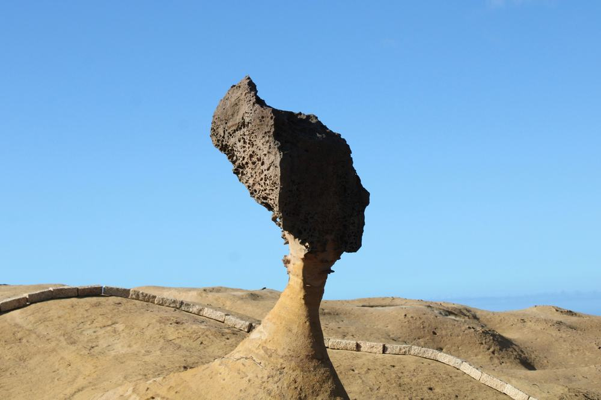
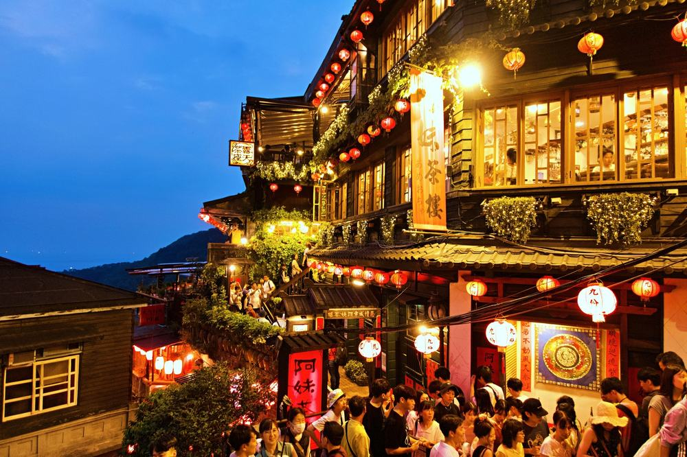
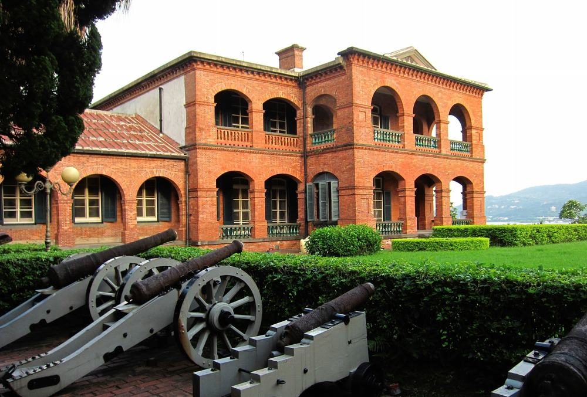
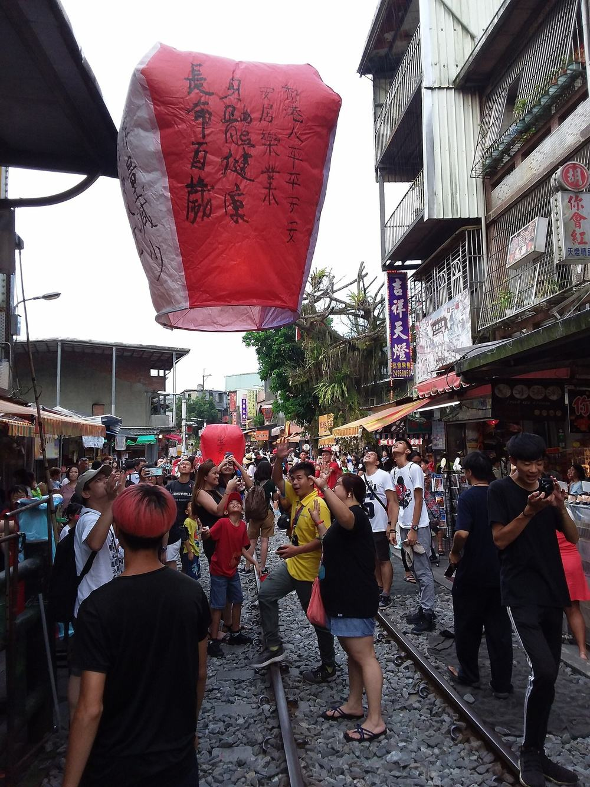

타이베이 패키지 가격 65만원, 부산 출발에 101 전망대까지 되는 이유 (모두투어 · 에어부산 직항 · 3박 4일)
결론 — 추천. 부산·경남에서 인천을 안 거치고 가고 싶은 분, 타이베이가 처음이라 101·지우펀·스펀·야류·단수이를 한 번에 보고 싶은 분에게 맞음. 쇼핑 매장 두 번 들르는 게 싫은 분은 고르면 안 됨.
부모님 가을 여행으로 부산에서 바로 뜨는 상품을 찾다가 이게 걸렸음. 김해에서 두 시간 반이면 타이베이인데, 3박에 식사 열 끼가 다 들어 있고 101 전망대 입장까지 적혀 있어서 65만 9천원이 어디까지 커버하는지 항목별로 뜯어봤음.

| 항목 | 내용 |
|---|---|
| 여행사 | 모두투어 |
| 가격 | 659,000원 (1인 · 성인 기준 · 9월 말 출발) |
| 일정 | 3박 4일 · 오전 10시 50분 출발 |
| 항공 | 에어부산 직항 (김해-타오위안 2시간 30분) |
| 숙소 | 시외 4성급 3박 (호텔명은 출발 전 안내) |
| 가는 곳 | 101 전망대 · 라오허제 야시장 · 야류 · 지우펀 · 스펀 · 단수이·홍마오청 · 중정기념당 · 서문정 · 고궁박물원 |
| 반드시 더 내는 돈 | 가이드·기사 경비 US$40 (현지 지불) |
결론부터 말하면 같은 동선을 직접 짜도 값은 비슷하게 나옴. 그런데 그 값에 아침마다 버스 시간표를 안 찾아도 되고, 야류·지우펀·스펀 세 곳을 하루에 도는 건 자유여행으로는 안 짜짐. 값어치는 거기서 갈림.
| 순서 | 다루는 것 | 한 줄 결론 |
|---|---|---|
| 1 | 구성 뜯어보기 | 식사 10회 전부 포함 · 101 전망대 포함 · 현지 필수는 US$40 하나 |
| 2 | 일정 살펴보기 | 첫날 오후부터 101, 둘째 날 외곽 3곳, 셋째 날 단수이·시내 |
| 3 | 자유여행 VS 패키지 | 직접 짜면 72만원, 패키지는 경비까지 71만 5천원 |
1. 구성 뜯어보기
요약 — 항공·3박·식사 10회·관광 9곳 입장·101 전망대·가이드·보험까지 65만 9천원. 현지에서 반드시 내는 건 가이드·기사 경비 US$40 하나. 다만 쇼핑 2회와 선택관광(발마사지)이 있음.
1-1. 값에 뭐가 들었나
1인 65만 9천원임. 3박 4일 기준임.
| 항목 | 상태 |
|---|---|
| 왕복 항공권 | 포함 (에어부산 직항 · 세금·유류할증 포함) |
| 호텔 3박 | 포함 (시외 4성급 · 2인 1실) |
| 식사 10회 | 포함 (자유식 0 · 호텔 조식 3회 · 특식 2회 딤섬·샤브샤브) |
| 관광지 입장 9곳 | 포함 (중정기념당 · 고궁박물원 · 야류 · 서문정 · 지우펀 · 스펀 천등 · 단수이 · 홍마오청 · 진리대학) |
| 101 전망대 89층 | 포함 (일정표 기준 · 상품명에 '101빌딩 포함') |
| 망고빙수 · 버블티 | 특전으로 포함 |
| 한국어 가이드 · 전용 버스 | 포함 |
| 여행자보험 | 포함 |
| 가이드·기사 경비 US$40 | 불포함 (현지 지불 · 성인·아동 동일) |
| 인솔자 | 불포함 (현지 가이드가 전 일정 동행) |
| 쇼핑 | 2회 (예정 매장 4곳 중 2곳 · 각 1시간) |
| 선택관광 | 발마사지 30분 US$30 (미참여 시 자유시간) |
대만 패키지는 가이드·기사 경비를 현지에서 걷는 게 보통이고 이 상품도 그럼. US$40이면 우리 돈 5만 6천원 안팎임. 상품가에 이걸 더해서 1인 71만 5천원으로 보면 됨.
| 항목 | 금액 | 비고 |
|---|---|---|
| 가이드·기사 경비 | US$40 (약 5만 6천원) | 필수 · 현지 지불 |
| 발마사지 30분 | US$30 (약 4만 2천원) | 선택 · 안 하면 자유시간 |
| 음료·주류 | 끼니당 1천~3천원 | 식사에 나오는 음료 외 |
| 스펀 천등 추가 | NT$200 안팎 (약 9천원) | 4인당 1개는 포함 · 더 띄우면 |
| 합계 (필수만) | 약 5만 6천원 | 마사지까지 하면 약 9만 8천원 |

1-2. 101 전망대가 상품가 안에 있음
보통 타이베이 상품에서 101 전망대는 선택관광 US$35로 따로 파는 항목임. 이 상품은 상품명에 '101빌딩 포함'이 붙어 있고 1일차 일정표에 '101타워 관광 포함'이라고 적혀 있음. 첫날 저녁에 올라감.
어디서 확인하나 — 일정표 1일차 끝에 '101타워 관광 포함'이 있는지 봄. 「선택관광」 칸에도 같은 이름이 US$35로 남아 있는데, 그건 이 여행사 대만 상품이 공통으로 쓰는 표임. 예약 전화에서 "101 전망대 포함 맞나요" 한 번만 확인하면 됨.
전망대는 89층, 엘리베이터가 37초 만에 올라감. 공식 요금이 성인 NT$600이라 우리 돈 2만 6천원쯤 됨.
1-3. 식사가 열 끼 다 들어 있음
일정표상 식사 10회가 전부 포함이고 자유식이 한 끼도 없음. 호텔 조식 3회, 특식 2회(1일차 저녁 딤섬, 3일차 저녁 샤브샤브), 현지식 5회임. 1일차 점심만 스낵식(샌드위치 또는 빵+음료)임 — 비행기 내려서 바로 움직이는 날이라 그럼.
어디서 확인하나 — 일정표 각 날 식사 칸에 '자유식'이라는 글자가 있는지 봄. 이 상품은 한 곳도 없음. 대신 1일차 중식이 '스낵식'이라고 적혀 있으니 첫날 점심은 가볍다고 생각하면 됨.

1-4. 쇼핑 2회, 선택관광은 하나
쇼핑은 2회임. 예정 매장이 과자·잡화·잡화·차 네 곳인데 그중 두 곳을 들름. 각 1시간, 구매는 자유임. 과자 매장은 환불이 안 되고 나머지 세 곳은 환불 가능이라고 적혀 있음.
선택관광은 발마사지 30분 US$30 하나뿐임. 안 하면 마사지샵 근처 거리 산책이나 자유시간임. 101 전망대는 위에서 말한 대로 포함이라 선택관광 표에 있어도 따로 낼 일이 없음.
어디서 확인하나 — 상품 페이지 「쇼핑」 칸에서 매장 수와 '환불 가능' 표시를 봄. 「선택관광」 칸의 '미참여 시' 줄이 '자유시간'이면 안 해도 손해가 없음.
출발일별 요금 확인하기
https://naver.me/GcATN8qf
| 질문 | 답 |
|---|---|
| Q. 쇼핑 없나요? | 2회 있음. 과자·잡화·차 매장 중 두 곳, 각 1시간. 구매는 자유 |
| Q. 가이드 경비는 따로 내나요? | 냄. 1인 US$40을 현지에서 지불함. 상품가 밖임 |
| Q. 출발확정인가요? | 아님. 최소 8명이 모여야 출발하고 8명 미만이면 항공 추가요금이 있음. 예약 후 담당자 전화에서 확인 |
2. 일정 살펴보기
요약 — 1일차 낮 12시 35분 도착해서 저녁에 101 전망대. 2일차 야류·지우펀·스펀 외곽 세 곳. 3일차 단수이·중정기념당·서문정. 4일차 고궁박물원 보고 오후 4시 40분 비행기. 버스는 나흘에 약 8시간임.
| 일차 | 가는 곳 | 식사 | 숙소 |
|---|---|---|---|
| DAY 1 | 김해 10:50 출발 → 타오위안 12:35 · 자오궁 · 라오허제 야시장 · 101 전망대 | 스낵식 · 특식(딤섬) | 시외 4성급 |
| DAY 2 | 야류 지질공원 · 지우펀 · 스펀 천등(4인당 1개) | 조식 · 중식 · 석식 | 시외 4성급 |
| DAY 3 | 단수이 · 홍마오청 · 진리대학 · 중정기념당 · 서문정 · (선택) 발마사지 | 조식 · 중식 · 특식(샤브샤브) | 시외 4성급 |
| DAY 4 | 고궁박물원 · 타오위안 16:40 출발 → 김해 19:55 | 조식 · 중식 | — |

2-1. 첫날부터 꽉 참
오전 10시 50분에 김해에서 떠서 낮 12시 35분에 내림. 점심은 스낵식으로 때우고 바로 자오궁(송산 자오궁)과 라오허제 야시장으로 감. 라오허제는 타이베이에서 손에 꼽는 야시장이고 입구가 그 사원임. 그다음 101 전망대에 올라감 — 해 진 뒤에 올라가야 야경이 나오는데 일정이 딱 그 시간임.
첫날 저녁이 특식 딤섬임. 인천 출발 상품이면 새벽에 집을 나서야 하는 시간표인데, 부산 출발이라 아침에 나가서 점심에 도착함. 이게 이 상품의 첫 번째 값어치임.
2-2. 둘째 날이 이 상품의 핵심임
야류 지질공원 → 지우펀 → 스펀. 세 곳 다 타이베이 시내에서 한 시간 안팎 떨어진 외곽이고 방향이 제각각임. 자유여행이면 이 세 곳을 하루에 돌기가 어렵고, 보통 투어 버스를 따로 삼.
야류는 바닷가 바위밭이라 평지지만 바람이 셈. 여왕머리 바위는 목 둘레가 해마다 깎여서 지금 봐야 하는 바위임. 지우펀은 산비탈 골목이라 계단과 경사가 있음. 해 질 무렵 홍등이 켜지는 걸 보는 게 이 골목의 핵심임. 스펀은 철길 위에서 천등을 띄움 — 4인당 1개라 두 분이 가면 다른 팀과 한 등을 나눠 씀.
어디서 확인하나 — 일정표 2일차에 야류·지우펀·스펀이 같은 날에 있는지 봄. 상품에 따라 스펀이 빠지거나 지우펀만 있는 경우가 있음. 천등 옆 '4인당 1개' 글자도 봄. 1인 1개인 줄 알고 가면 실망함.

| 일차 | 구간 | 시간 |
|---|---|---|
| DAY 1 | 공항 → 시내 → 호텔 | 약 1시간 30분 |
| DAY 2 | 호텔 → 야류 → 지우펀 → 스펀 → 호텔 | 약 3시간 |
| DAY 3 | 호텔 → 단수이 → 시내 → 호텔 | 약 2시간 |
| DAY 4 | 호텔 → 고궁 → 공항 | 약 1시간 30분 |
| 합계 | 약 8시간 |
2-3. 셋째 날은 강변과 시내
단수이는 타이베이 북서쪽 강 하구 마을임. 홍마오청은 1644년 네덜란드가 세운 요새로 뒤에 영국 영사관이 됐고, 바로 옆 진리대학 옥스포드 칼리지는 붉은 벽돌에 중국식 지붕을 얹은 19세기 건물임. 강변 산책로에서 노을이 유명한데 낮에 가면 그건 못 봄.
오후에 중정기념당(정각마다 위병 교대식)과 서문정임. 서문정에서 망고빙수와 버블티 특전이 나옴. 저녁이 특식 샤브샤브. 이날 발마사지 선택관광이 있는데 안 하면 자유시간임.

2-4. 호텔은 시외 4성급, 이름은 출발 전에 나옴
3박 모두 시외 4성급이고 후보 호텔이 여럿 적혀 있음(오차드파크·타오가든·하이원 홀리데이·아시아 퍼시픽 등). 어느 곳이 될지는 출발 전에 안내됨. 시외라 아침마다 버스로 시내에 들어가는 대신 값이 내려가 있음.
호텔 이름을 미리 알아야 마음이 놓이는 분에겐 걸리는 조건임. 등급(4성급)과 조건(2인 1실 · 조식 포함)은 정해져 있으니 그걸 기준으로 보면 됨.

| 질문 | 답 |
|---|---|
| Q. 많이 걷나요? | 지우펀 골목 계단이 유일한 오르막임. 야류는 평지 해안, 나머지는 평지 |
| Q. 9월 말에 덥나요? | 더움. 낮 28~31도에 습함. 지우펀은 비가 잦아 우산이 필요함 |
| Q. 호텔은 어디인가요? | 시외 4성급이고 이름은 출발 전에 안내됨. 후보 호텔 목록은 상품 페이지 일정표에 있음 |
3. 자유여행 VS 패키지
요약 — 같은 동선을 직접 짜면 1인 72만원쯤 나오고, 패키지는 가이드 경비를 더해 71만 5천원임. 값은 거의 같음. 갈리는 건 야류·지우펀·스펀을 하루에 도는 버스와 열 끼를 알아서 챙겨 주는 것임.
같은 동선을 직접 짜면 얼마인지 계산해봤음. 패키지에 들어 있는데 자유여행이면 따로 내야 하는 돈까지 전부 넣었음. 환율은 NT$1 = 43원, US$1 = 1,400원으로 잡았음. 대부분 추정치라 근거 열에 적어 뒀음.
| 항목 | 자유여행 | 패키지 | 근거 |
|---|---|---|---|
| 왕복 항공 | 약 30만원 | 포함 | 부산-타이베이 에어부산 9월 말~10월 초 왕복 25~35만원대 (항공권 비교 사이트 월별 조회 · 추정) |
| 호텔 3박 | 약 14만원 | 포함 | 시외 4성급 2인 1실 1박 9만원 안팎 ÷ 2 × 3박 (추정) |
| 식사 10끼 | 약 13만원 | 포함 | 한 끼 NT$250 기준 + 딤섬·샤브샤브 특식 (추정) |
| 외곽 3곳 교통 | 약 8만원 | 포함 | 야류·지우펀·스펀 하루 투어 버스 NT$1,500 안팎 + 시내 MRT·버스 (추정) |
| 입장료 | 약 5만원 | 포함 | 101 전망대 NT$600 + 야류 NT$120 + 고궁 NT$350 + 홍마오청 NT$80 (각 공식 공시 요금 · 변동 가능) |
| 공항 ↔ 시내 | 약 1만 3천원 | 포함 | 타오위안 공항 MRT 편도 NT$150 왕복 |
| 여행자보험 | 약 1만원 | 포함 | 3박 4일 기준 |
| 가이드·인솔자 | 없음 | 한국어 가이드 (경비 US$40 현지) | 양쪽 다 US$40 기준으로 봄 |
| 합계 | 약 72만원 | 65만 9천원 + 가이드 경비 약 5만 6천원 = 약 71만 5천원 | 선택관광·쇼핑 제외 |
숫자만 보면 값은 거의 같음. 그러면 뭐가 남느냐 — 표에 못 넣은 것들임.
야류·지우펀·스펀은 방향이 다 달라서 자유여행이면 투어 버스를 따로 잡거나 이틀로 나눠야 함. 열 끼를 어디서 먹을지 매번 찾을 필요가 없음. 부모님만 보내는 거면 한국어 가이드가 나흘 붙어 있다는 게 값으로 안 적히는 제일 큰 항목임. 그 값에 101 전망대까지 들어 있으니 이 구성이면 맞음.

어디서 확인하나 — 자유여행으로 갈 거면 야류·지우펀·스펀 하루 투어 버스를 먼저 알아봄. 대개 오전 출발 저녁 귀환이고 1인 NT$1,200~1,800 선임. 그 값과 호텔 3박을 더해 보면 패키지와 비교가 됨.
| 자유여행이 맞는 사람 | 패키지가 맞는 사람 |
|---|---|
| 시내 호텔에서 밤거리를 걸을 것임 | 야류·지우펀·스펀을 하루에 다 볼 것임 |
| 대만을 한 번 이상 가봤음 | 타이베이가 처음임 |
| 쇼핑 매장 방문 자체가 싫음 | 이동·식사는 맡기고 앉아만 있고 싶음 |
| 인천에서 출발함 | 부산·경남에서 출발함 |
| 질문 | 답 |
|---|---|
| Q. 환전은 얼마나 하나요? | 가이드 경비 US$40은 달러로 냄. 개인 비용은 대만 달러로 3~5만원어치면 넉넉함 |
| Q. 혼자 가면 얼마 붙나요? | 싱글룸 사용료가 붙음. 금액은 상품 페이지나 예약 전화에서 확인 |
| Q. 비자 필요한가요? | 상품 페이지 기준 불필요. 여권 유효기간 6개월 이상 |
4. 정리
65만 9천원에 부산 김해 출발 직항, 3박, 식사 10회 전부, 101 전망대 89층, 야류·지우펀·스펀, 단수이·홍마오청, 중정기념당, 고궁박물원, 망고빙수·버블티까지 들어 있음. 현지에서 반드시 내는 건 가이드·기사 경비 US$40 하나임.
같은 동선을 직접 짜면 72만원이 나와서 값은 비슷함. 값보다 더 큰 건 부산에서 아침에 나가 점심에 도착하는 시간표, 그리고 외곽 세 곳을 하루에 돌아 주는 버스임.
걸리는 건 쇼핑 2회, 호텔 미정(시외 4성급), 자유시간 없음, 최소 8명 이 넷임. 전부 상품 흠이 아니라 맞는 사람을 가르는 조건임. 쇼핑 매장이 싫으면 노쇼핑 상품을 보면 되고, 부산에서 처음 가는 타이베이면 이 구성이 맞음.
출발일별 요금 확인하기
https://naver.me/GcATN8qf
같은 기준으로 타이베이 패키지 고르는 법만 따로 정리한 글도 있음 — https://blog.naver.com/robotnady10/224415230246
함께 보면 좋은 글
노랑풍선 백두산 49만원, 천지 두 번에 광개토대왕비까지 되는 이유
https://blog.naver.com/robotnady10/224411110252
참좋은여행 북해도 109만원, 현지에서 낼 돈이 정말 0원일까?
https://blog.naver.com/robotnady10/224410590278
이 글에는 제휴 링크가 포함되어 있으며, 링크를 통해 예약 시 일정 수수료를 받습니다. 가격은 동일합니다. 이 글은 9월 말 출발 기준이며, 출발일에 따라 가격이 달라집니다.
사진 출처: tp_taipei101_obs_1 — Pexels / hkg_dimsum_1 — Pexels / tp_yehliu_queen_1 — Pexels / tp_jiufen_lanterns_1 — Pexels / tp_fort_santo_domingo_1 — Wikimedia Commons / sy_hotel_room_1 — Pexels / tp_shifen_lantern_1 — Wikimedia Commons